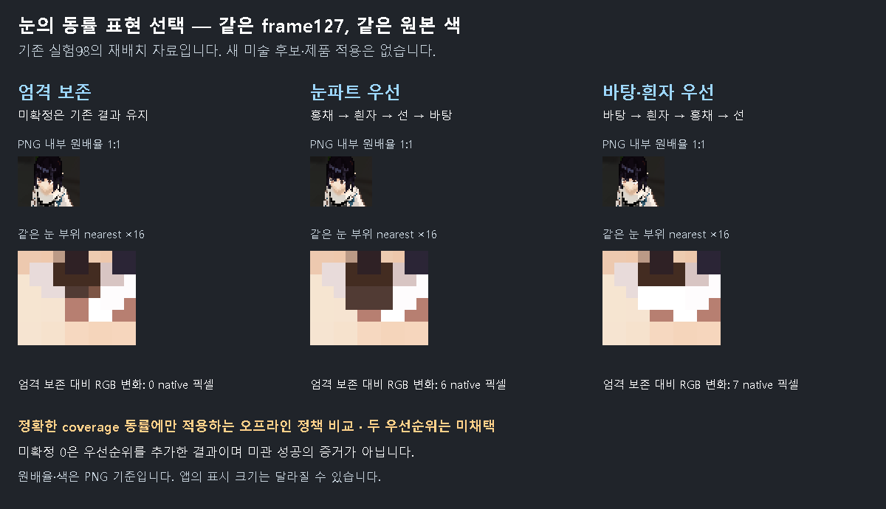
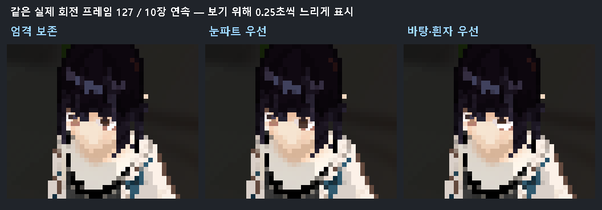

제품 기본 경로는77입니다.98의 확정된 비눈/world 복원 수정은 보존했고,99에서 Assets 변경·C# import·제품 전환은 하지 않았습니다. 아래 세 정책은 기존98의 같은 원본을 재포장한 오프라인 비교이며 어떤 새 미술 후보도 채택하지 않았습니다.
엄격 보존: 판정할 근거가 동률이면 기존 결과 유지. 눈파트 우선: 홍채→흰자→선→바탕. 바탕·흰자 우선: 바탕→흰자→홍채→선. 두 우선순위는 정확한 coverage 동률에만 적용하며, unknown alpha를 투명으로 바꾸지 않습니다. 미확정0이라는 수치가 미관 합격을 뜻하지 않습니다.
대표 frame127 PNG 원본 · 같은 회전10프레임 무손실WebP · 정확한 출처·좌표·파일해시 계약


Library 공식 helper는 prepare_uploads 기능을 찾지 못해 업로드 전 실패했습니다. 온라인 링크나 Library 파일은 생성되지 않았습니다. 로컬 경로를 웹 링크로 간주할 수 없습니다. 전달 실패와 실행 여부. WebP는 무손실10프레임이며 지원 브라우저에서 움직입니다. GIF256색 변환으로 원본색을 바꾸지 않았습니다.
기존 head/main 카메라를 사용했습니다. 두 카메라는 실제 view 행렬과 물리 격자가 다르고, per-view engine·캐시·버퍼·source RT가 분리됐습니다.6프레임 동시 생산 중 B witness만 무효화하고 다음 프레임 재생성을 확인했습니다. B 소유자원 해제 후4프레임 A는 같은 특징색/형태를 유지하며 계속 생산됐습니다. 원래 world는 의도적으로 같은 읽기 전용 생산자를 공유하며, 겹치는3,996표본의 RGBA/texel/depth가 exact였습니다.1,032plane의 source/frame/serial/view 라벨을 대조했습니다.
검증 범위는 A 최종 합성 + B 실제 source/query/cache/non-eye/world입니다. head-enabled 제품 경로는 B 원본348 records를 만들지 않으므로, B 최종 눈 합성은 검사하지 않았고 미생산 버퍼를 읽지 않았습니다. 임의 각도의 두 카메라·다중 모델·동시 두 최종 합성의 보증은 아닙니다.
RX9070XT/D3D11 supportsGpuRecorder=true. 설치된 URP의 GPU-enabled CustomSampler를 쓰는 ProfilingSampler로 표본을 얻었습니다. 표는 GPU block당 최소/중앙/최대 ms이며 CPU시간을 대신 쓰지 않았습니다. B query/non-eye는 실제 프레임당2block이 관측돼 총시간을 block수로 나눈 값입니다. 원시 합계·count와 문서상3프레임 지연 정보는 JSON에 있습니다.
| 마커 | GPU ms/block 최소/중앙/최대 | 프레임별 GPU block수 |
|---|---|---|
| View99 A compose GPU | 0.000000/0.000000/0.000040 | [1, 1] |
| View99 A non-eye GPU | 0.025880/0.035280/0.036360 | [1, 1] |
| View99 A query GPU | 0.270400/0.410420/0.539400 | [1, 1] |
| View99 A world GPU | 0.002000/0.002640/0.003440 | [1, 1] |
| View99 B non-eye GPU | 0.025760/0.030300/0.031600 | [2, 2] |
| View99 B query GPU | 0.338460/0.401870/0.504760 | [2, 2] |
| View99 B world GPU | 0.001760/0.002460/0.002760 | [1, 1] |
compose 표본은0~0.000040ms로 안정적인 비용 판정에 부족합니다.0비용이라고 판단하지 않았습니다. query는 BVH refit/query/joint select이며 canonical Pack·retarget·원래 렌더링·readback·비교용 합성 비용을 포함하지 않습니다. Editor의 작은 ROI 진단값이고 전체 GPU 프레임 예산/FPS/제품 성능 합격이 아닙니다. 추가 추측 계측은 하지 않았습니다.
두 engine 각각6,418,564bytes의 명시적 GPU buffer를 소유했습니다(합계12,837,128bytes, texture/RT 제외). 이 입력은 뷰당2,486query입니다. 상세 연산량/원시 표본: SUMMARY99 · PROFILING99.
Play1회 정상 종료, Edit복귀. dirty31→31, 직렬화47/47 exact, InputSettings 같은 객체·22값·장치 보존, 씬/옵션/background/pipeline/time/global 복구 오류0, RT30→30, 신규Console 오류0. Unity GetTotalAllocatedMemoryLong 변화−18.61MiB는 물리RAM 또는 누수 판정이 아닙니다. 빌린 buffer를 해제하지 않았고 새 source/engine/RT는 자기 소유분만 해제했습니다.
코드: ViewB99.AddB99/CaptureB99/DisposeB99, HoldScope99, LiveGraph96.Draw, NonEyeUnderlay98.Draw, LiveFinal96.Present. 검증: analyse99, 독립 읽기 회귀 검사. 관련 커밋은 이 경로의 git log -1에서 확인할 수 있습니다.